COMP66060 MSc Project Report · University of Manchester
Tianping Deng · Supervisor: Dr Mary McGee Wood · 2026
Pawside is a mobile to-do application for adults with ADHD, built for iOS and Android from one Flutter codebase. Its starting idea is simple: for this population, gentle reminders rarely get a task started, but external anchors — a child, a pet, another person who depends on you — often do. So instead of sending reminders, Pawside gives the user a virtual pet — adopted from a roster of eight preset cats and dogs, or generated from photographs of the user's own animal — and frames a small daily task list as things the user and the pet do together. Safety rules — no punishment, no streaks, no failure states — are built into the data model rather than left to good intentions.
I tested that idea against four bodies of evidence: community accounts, 4,754 app-store reviews, a structured literature search, and the build itself. The most important finding goes against the design: the anchor idea turns out to be its least evidenced part, while the reminder-and-planning approach it set out to replace has controlled evidence in diagnosed ADHD samples. The safety rules survived better, though guilt is documented even in trackers with no failure state — removing punishment does not by itself remove it.
The core loop is complete on both platforms, and 247 automated tests pass across the application, the generation pipeline and the hatch backend. Since mid-term the project has shipped a pixel-art restyle, an ambient pet overlay on Android, a pipeline that turns photos into an animated pet in about a minute, a rebuilt onboarding, a notification layer in which the pet only ever talks about its own day, and a companionship layer: a furnished room, focus sessions, a feeding-driven bond system, and once-only timed invitations. A user study that would test the anchor mechanism is designed but does not fit the project window; the report is explicit about what can and cannot be claimed without it.
Attention-deficit/hyperactivity disorder (ADHD) is a neurodevelopmental condition characterised by persistent inattention and, often, hyperactivity and impulsivity, at levels that impair everyday functioning (Faraone et al. 2021). Most task-management software assumes the user can keep the system going. For adults with ADHD this is backwards: the mental capacity needed to maintain a productivity tool is exactly the capacity that is impaired. The specific capacity is prospective memory — remembering to do a thing at the right moment — and it does not fail evenly. In a case-control experiment, 25 adults with diagnosed ADHD were strongly impaired on time-based intentions ("do X at 7 pm") but performed like matched controls on event-based ones ("do X after dinner") (Altgassen, Kretschmer & Kliegel 2014, Journal of Attention Disorders). The population is also very mixed: across six neuropsychological domains, no single deficit shows up in more than a minority of diagnosed people — 18.1% to 36.1% depending on the domain (Coghill et al. 2014, Psychological Medicine). Whatever mechanism a tool builds will therefore help a subgroup, not everyone — and that applies equally to the reminder mechanisms this project set out to improve on.
What people with ADHD say works for them is concrete and external: a child, a dog that must be walked, an alarm clock placed across the room — not motivational messages. Pawside asks whether that observation survives being built: can a virtual pet made from the user's own animal act as an external anchor for small daily tasks?
Build and evaluate a to-do application whose engagement mechanism is an external anchor rather than a reminder, without importing the guilt that has caused similar applications to be abandoned. Objectives: (i) a dual-platform core loop that works entirely offline, with no account and no server; (ii) a pet the user cares about — a preset roster of cats and dogs so the app is complete without owning an animal, plus, as the differentiating feature, a pet generated from the user's own animal, on the hypothesis that attachment to a real, recognisable companion is stronger than attachment to a generic avatar; (iii) safety red lines — no punishment, no streaks, no failure states — enforced by the structure of the code, not by discipline; (iv) an evaluation against a retention criterion, where the criterion itself is examined rather than assumed.
The best documentation of how this category fails comes from its own users. I read high-engagement threads across r/ADHD, r/adhdwomen and r/ADHD_Programmers — including a 4,625-upvote account of 500 days spent trialling 36 productivity applications — and three patterns repeat. First, more features do not fix the problem: the top-voted example is a user who built himself an app that read his email, prioritised it automatically and contacted him every morning — and he still did not use it. The barrier is not friction; it is getting started at all. Second, maintaining the tool is itself an executive-function task, so the tool decays exactly when the user does. Third, the community has its own evaluation standard: early reviews are worthless because ADHD reviewers chase novelty, and only two-week retention convinces anyone. One serial abandoner supplied the phrase this project now designs against: an app that "feels like my disappointed mother", where the user feels "guilty about the app I downloaded to stop feeling guilty about tasks". Commenters have a name for this state: a shame reminder.
I surveyed the four dominant applications in this space using 4,754 store reviews collected for this report (method and sampling caveats in Section 2.2), their public store metadata, and hands-on sessions with each app on my own device. Figure 1 shows one representative screen from each — left to right: Finch, with the pet sitting above the day's self-care tasks; Tiimo, a visual timeline planner; Habitica, RPG-style stats whose guide text warns "if you miss one, your avatar will take damage overnight"; and Numo, a task list with instant point rewards. Finch, Tiimo and Habitica were captured on my own Android device (Tiimo running in Chinese); the Numo panel is the developer's own store-listing image, as the correct Numo could not be re-captured in time for this report.
Finch (virtual bird plus self-care tasks; 739K App Store ratings at 4.9★, 10M+ Play installs) is the category leader and the reference product for the pet mechanism. Emotional-bond language ("my birb", "companion", "attached") appears unprompted in 29% of its recent Apple reviews, against 9–13% for the other three — the clearest external evidence that the pet does something the other mechanisms do not. Its failure modes are just as instructive: guilt on lapse severe enough that users stop opening the app; users faking completions to earn pet rewards, and recognising the self-deception while doing it; an aesthetic adults repeatedly call infantile; and — its top-voted Android complaint — data loss, with multi-year pets wiped and users explicitly asking for a manual backup button the product does not provide. One detailed review also locates where the mechanism works: the pet reward does not move large goals ("being rewarded by buying clothes for a virtual bird isn't enough motivation"), but it does move small daily maintenance — finishing a bottle of water, stretching, taking medication — and the app is opened to see the pet, with reminders read incidentally.
Tiimo (visual daily planner; Apple "app of the year" laurels) shows a sharp split between its 4.6★ cumulative rating and its recent reviews, 28.6% of which are one-star; its biggest complaint cluster is notifications, and it barely exists on Android. Habitica (RPG-style gamification, 5M+ Play installs) is the clearest demonstration of the punishment problem this project's red lines answer: its angriest reviews are about losing levels to a boss fight, and it has a years-long, still-open wound around Android notifications failing under battery management or arriving in overwhelming batches. Numo positions itself as the non-infantile ADHD app — the same positioning this project targets — but is burning it: 29% of its reviews concern billing disputes, and its Android rating has collapsed to 3.29★. A newer cluster of quest-style apps (Hyper, TaskHero, LifeUp) competes for the same users with "levelling up, not being told what to do".

Figure 2 shows three mechanisms from the category leader that Pawside deliberately leaves out — left to right, Finch's streak counter ("1 DAY STREAK"), its seven-day free-trial offer with a countdown, and its cosmetics shop. Each maps to a documented failure mode: streaks to guilt on lapse, subscription pressure to the category-wide billing complaints, and cosmetic rewards to the reported ceiling of the pet mechanism. Each omission has evidence behind it, not taste. A streak counter turns a missed day into a visible failure state: the reviews above show broken streaks producing guilt severe enough that users stop opening the app, and Section 1.3.3 shows guilt arising even in trackers with no failure state — so a streak manufactures exactly the self-judgement that drives abandonment, and for an ADHD user missed days are the texture of the condition, not a lapse of will. A trial countdown monetises the very impairment the app claims to serve — forgetting to cancel is an executive-function failure — and Numo's collapse shows the cost of being caught doing it. And the cosmetics shop sits at the mechanism's known ceiling: shop rewards do not motivate ("clothes for a virtual bird"), while a richer shop invites the faked completions users already report. This is why Pawside's treat is the only currency, is spent on the pet, and buys nothing else.
Three design consequences follow. The pet-bond mechanism is validated and its ceiling untouched. Data loss is existential for an emotional product — and worse for Pawside, whose pet is irreplaceable and whose storage is local-only. And subscription dark patterns are a category-wide trust failure that a competitor can differentiate against simply by not committing them. Pawside takes that argument to its conclusion: in its current form the application has no real-money surface at all — nothing in it can be bought with money — so none of these patterns has anywhere to live.
Before this report I treated the anchor mechanism as established and the safety rules as obviously sufficient. I ran a structured literature search across sixteen questions to check both (method in Section 2.2). It changed my position on each, and this report states the revised positions instead of defending the original ones.
The anchor mechanism is not an established finding. The only controlled test of "body doubling" — working alongside another person — found no effect in 26 participants (Schuenke et al. 2025), and the broader social-facilitation meta-analysis puts mere presence at 0.3–3% of variance, and finds it impairs complex tasks (Bond & Titus 1983). Animal care has never been tested as a task-initiation aid in ADHD adults. Nothing I retrieved supports the chain human presence helps → animal responsibility helps → a photo-derived virtual animal helps. Pawside is therefore testing a mechanism, not implementing a proven one, and this report makes its claims accordingly.
The approach it rejected does work. If-then implementation planning improves inhibition, shifting and distraction resistance in children with diagnosed ADHD (Gawrilow & Gollwitzer 2008), on top of a large general-population meta-analysis (Gollwitzer & Sheeran 2006). The slogan "reminders do not work, anchors do" gets the evidence backwards.
Removing punishment does not remove guilt. Guilt shows up after abandonment even in self-trackers with no character, no failure state and no punitive feedback — 16.2% of activity-tracker users (Epstein et al. 2016) — because the user's own judgement generates it. Giving something a face raises the felt cost of abandoning it (Chandler & Schwarz 2010), and an analysis of 582 r/Replika posts found harms driven by role-taking: users felt the character had needs they were obliged to meet (Laestadius et al. 2024). The zero-punishment red line is necessary but not sufficient, and the shame reminder finding says the same thing from the user's side.
The one experiment that varied pet feedback found warmth-only inert. Adolescents whose virtual pet gave both positive and negative feedback were roughly twice as likely to eat breakfast; the positive-only pet did not beat the control (Byrne et al. 2012). The sample is adolescent, the outcome is breakfast, and guilt was not measured — but it is the closest existing test of this project's central safety rule, and it is not reassuring. I keep the rule as an ethical commitment; the evaluation must be able to see whether warmth-only is enough.
Three claims I had been repeating are withdrawn. The "prefrontal-to-amygdala switch" story about urgency-driven initiation falls apart when its sources are read: the finding concerns acute uncontrollable stress causing impairment, largely in animals (Arnsten 2015), while ADHD prefrontal regions are under-active. The "5–10% transfer rate" for single-mechanism ADHD interventions does not exist in the literature; it is demoted to attributed practitioner opinion. And the 1–7 task cap cannot cite Miller: "seven plus or minus two" is about immediate memory span, and Cowan calls the seven a rhetorical device (Cowan 2001). The cap is instead defended by the observation in Section 1.3.2: small daily maintenance is where the pet mechanism works at all.
What the evidence does support. Warmth-only reinforcement has a direct ADHD result: on an incentive go/no-go task, participants with ADHD gained more from social reward — positive facial expressions — than controls did (Kohls et al. 2009). And the event-based cue is the best-grounded interaction choice available, given the prospective-memory dissociation in Section 1.1. This also matches the cue type independently proposed by the early-years special-needs specialist whose feedback my supervisor forwarded — a concrete relative anchor ("can we finish this before they finish making your lunch") — rather than the clock-triggered daily prompt I currently implement.
Platform: Flutter, not two native apps. The application is built with Flutter 3.44 (Google 2026a), a UI toolkit that compiles a single codebase, written in the Dart language (Google 2026b), to native iOS and Android binaries. Both options produce a good product; the deciding factor is scope. Evaluation needs real users on whatever handset they own, and a solo project cannot keep two native codebases at that standard. The cost is accepted openly: surfaces Flutter cannot reach must be written natively — which is exactly what happened with the Android overlay, written in Kotlin (JetBrains 2026), Android's first-class native language (Section 3.4), and will happen again with the iOS widget.
Architecture: boundaries before features. Figure 3 shows the structure of the codebase. lib/domain/ is pure Dart with no Flutter imports and owns the product's rules — the one-to-seven task cap, local-day rollover, positive-only history, treat economy and unlock thresholds. lib/data/ owns storage, notification scheduling and pet-pack install. lib/sprite/ owns pet rendering. lib/application/ is a coordinator that knows nothing about widgets, deliberately kept outside lib/ui/.

The dependency arrows only point one way, which is what makes the safety rules testable. To see why, follow one tap through the layers. When the user ticks a task, the widget calls the coordinator; the coordinator asks the domain layer to complete the task; the domain layer checks the rules, emits a completion event and a treat; the data layer appends the event to the log and rewrites the state file atomically; the UI rebuilds from the new state and the sprite layer plays the happy animation. At no point can a widget touch storage directly, and none of the rules need a widget to be tested. The same boundary was demonstrated in practice twice: the approved visual design, and later the full pixel restyle (Section 3.3), were both applied without touching domain logic.
Rendering: a small CustomPainter, not a game engine. The Flame engine would also do the job, and would be the obvious choice for a game. But a game-engine dependency for one animated actor is out of proportion, and it would move animation state out of the layer the tests can reach.
Data: local files, not a database, not a cloud. State is one versioned JSON document written by flush-then-rename; events are append-only newline-delimited JSON. SQLite (Hipp 2026) would be a fine alternative — but JSON files keep export and import human-readable, need no migration tooling beyond a version field, and make "your data is a file you can hold" literally true. There is no account, no server and no analytics. The reasons are partly ethical — the community research records explicit refusal to hand mental-health-adjacent data to small developers' cloud services — and partly methodological, because it makes evaluation possible without data infrastructure. Section 5 records the cost: retention cannot be measured the way any cited study measures it. The one server this project now has, the hatch proxy (Section 3.5) — a small Node.js service (OpenJS Foundation 2026) — holds no user data: it exists to keep the image-model key off the device and to enforce quotas. The generation pipeline it fronts is a Python command-line tool (Python Software Foundation 2026; Section 3.5).
Process. Every change starts from a written task specification stating goal, file scope, constraints and acceptance criteria. I accept a change only after reading the full diff and running the build and tests locally; user-visible changes are also walked through on a device or simulator. Every feature must state which ADHD problem it solves; if that mapping cannot be stated, the feature is not built. This constitution is written down and version-controlled alongside the code, and several of its rules are enforced by tests rather than by discipline (Section 5).
Table 1 collects the main design decisions, the strongest alternative to each, and the factor that decided it.
Table 1 — Design decisions and the alternatives they were weighed against.
| Decision | Chosen | Strong alternative | What decided it |
|---|---|---|---|
| UI framework | Flutter | Native Swift + Kotlin pair | Both give a quality UI; one codebase keeps a solo project able to reach evaluation on both platforms |
| Pet rendering | CustomPainter + Ticker | Flame game engine | One animated actor does not justify an engine; keeps animation state in the tested layer |
| Storage | Versioned JSON + JSONL log | SQLite | Both are reliable; files keep export human-readable and the "no server" promise literal |
| Animation source | 4 generated poses + a template skeleton | Generating every animation frame as its own image | Both produce a recognisable pet; per-frame took ~40 min per pet and drifted between frames, the skeleton takes ~1 min and moves deterministically (Section 3.5) |
| Visual style | Pixel art ("Cozy Pixel") | Soft photo-derived style | Soft style scored well on warmth but could not hold a stable silhouette (Section 4.4); pixel art is stable and answers the "infantile" objection |
| Notification cue | Event-based (planned, Section 6) | Time-based clock prompts | Time-based prospective memory is impaired in ADHD adults; event-based is spared |
Four bodies of evidence were gathered, deliberately of different kinds so each could check the others.
Community accounts. I read high-engagement threads and their top comments across three ADHD subreddits in two sweeps — one on tool abandonment, one on the condition's daily texture — recording per-thread links and vote counts so every claim stays traceable.
Store reviews. I collected 4,754 reviews via the public Apple review feed (1,154: Finch 400, Tiimo 350, Numo 254, Habitica 150) and a Play scraper (3,600: Finch 1,612, Habitica 1,537, Numo 339, Tiimo 112), deliberately oversampling one- to three-star reviews on the Play side. That choice is recorded next to every figure it affects: Play proportions show how concentrated a complaint is, not how common it is in the population.
Literature. I ran a structured search across sixteen questions covering the mechanism, the safety rules, and claims I had been repeating. Contradicting evidence was treated as the most valuable output, and "no credible evidence found" was recorded where that was the truth, rather than substituting adjacent work. The result is a 230-row citation table recording, per row, study design, sample, population mismatch, whether the claim is supported, and retraction flags checked against both OpenAlex and Crossref (two flagged, both disclosed). I also verified eight design-critical DOIs directly against the Crossref API — all eight resolved with matching titles — and checked the Altgassen finding line by line against the published abstract.
Limitations, stated up front. All the community strands sample self-selecting, self-identifying, mostly English-speaking online populations. Store reviews are written by people still using a product; Reddit is written largely by people who left. Self-identification is itself a methodological problem: executive-function rating scales and performance tests barely correlate (median r = .19, Toplak et al. 2013), so case-control effect sizes cannot be carried over to a self-identifying sample — only the weaker claim that self-rated difficulty predicts real functional impairment (Barkley & Murphy 2010).
The core loop — tasks, sprite engine, unlocks, local notifications and the JSONL event log — works on both platforms. On top of it:
Design and accessibility. The approved visual design, plus a semantics rework: custom tap targets own container semantics above their gesture handlers, decorative art is excluded from the accessibility tree, and onboarding scrolls on short viewports.
Raising system. Growth stages derived rather than stored, a treat economy, a full-day pet schedule, long-press interaction, and a collection gallery with no progress bars. Stored data migrates in place when the format grows, so an update never loses a pet.
To-do baseline. Tasks are ID-addressed objects of kind daily or oneOff, capped at one to seven; quick capture requires only a title; one-off tasks never carry age or overdue data. Positive history is derived only from completion events and renders only weeks that contain completions — no streak, gap, zero or missed-day state exists anywhere in the product.
Stability. Two real defects found and fixed: a quick-capture crash on dialog dismissal, and an Android release build that black-screened because release resource shrinking stripped the notification icon. The fix for the second also ensures a notification failure can never block startup again.
The differentiating feature in its first form: the user photographs their animal; the app assembles a request package; a sprite pack produced by the image-generation pipeline is imported and installed atomically; and a runtime registry merges bundled pets with installed packs. A later change made onboarding list the live registry instead of one hardcoded pet, and cleaned up exported request archives that had accumulated indefinitely.
Living with this build daily — I am inside the target population, which the evaluation treats as a stated limitation, not a secret — surfaced its main weakness: the idle animation read as choppy. Measurement found the cause. The six idle frames were generated independently, so 37–46% of pixels changed between neighbouring frames and the silhouette drifted about 4 px — six similar dogs rather than one dog breathing. The interim fix held a still frame while the pet rests; the real fix is the second-generation pipeline in Section 3.5.
The pixel-art experiment reported in Section 4.4 settled the style question, and the decision has been carried through the whole product, not just the sprite. The "Cozy Pixel" restyle gives the app stair-stepped borders, hard shadows, and pixel fonts and icons; the bundled pet Choco was regenerated as pixel-art canon with a full QA atlas. Because the restyle is confined to lib/ui/ and asset files, it landed without touching domain logic — the architectural claim in Section 2.1, demonstrated a second time. The same wave carried a naming change: the product took its release name, Pawside, with paw-print imagery replacing the egg motif and user-facing copy moving from "hatching" to "adoption" language. The retro aesthetic is also a positioning answer: Section 1.3.2 documents adults calling the category leader infantile, and pixel art reads as adult nostalgia rather than as a children's toy.
The strongest single piece of user evidence in the review corpus is a five-star review describing a widget's pet speaking to the user on a day they had already given up. That surface is now built for Android: a floating overlay, written natively in Kotlin, that keeps the pet on screen at a small ambient size whatever the user is doing. The first build rendered the pet at a third of the screen; the shipped version draws it at 1× — ambient means peripheral. In line with the red lines, the overlay never speaks about tasks: no reminders come from it, it is simply company. It does react to the app in one direction only — completing a task inside the app makes the overlay pet celebrate within a second; nothing negative ever crosses to it. The pet's position is draggable and survives even the app's process being killed. If the user declines the overlay permission, the app continues silently and never asks again. The overlay now draws whatever pet the user has adopted: when the active pet changes — a hatch, or a switch in the collection — the app bakes that pet's idle and celebration frames offline and hands them to the native service, which falls back to the bundled pet if no baked frames exist, so the surface can never go blank. Two refinements followed real use. The overlay hides itself while the app itself is in the foreground — two copies of the same animal is one too many — and it gained an invitation bubble: at a task's reminder time, a single line in the pet's invitation voice appears beside it for a few seconds and opens the app if tapped, the same never-nagging semantics as the system notification, delivered in person (Figure 4).
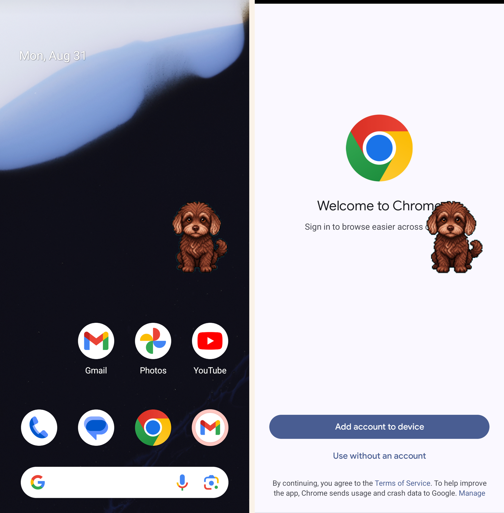
The first-generation pipeline (Section 3.2) produced its pet by generating every animation frame as its own image: about 14 serial generations and roughly 40 minutes per pet, with the inter-frame drift measured in Section 3.2, and the finished pack returned to the user by hand. That route is now retired. Its replacement generates only four canonical poses — sitting with eyes open, the same pose with eyes closed, curled asleep, and a side view — plus bounding boxes for the head, tail and legs, and packs them as a "rig pack". Everything that moves is code: a template skeleton drives breathing, blinking, gaze-following, a happy jump, eating a treat, stretching, falling asleep and running, with motion quantised to the pixel grid so it stays honest to the art style. Figure 5 compares the two routes. A hatch now takes about a minute and costs roughly £0.03 (¥0.3) in model fees, which makes hatching in-app viable: photos go from the app to a small proxy backend that holds the image-model key, enforces a species gate (cats and dogs only for now), a per-device hatch quota, rate limits and cost ceilings — and returns the finished pack straight to the device. No account is created and no photos are retained server-side. The photos themselves can be taken from any angle — the in-app guidance says only that different angles improve generation quality — and the four poses are generated outputs, not required inputs. Pets hatched by the old pipeline keep working: the renderer routes by pack format, and the two formats run side by side. The "failed" reaction class present in early animation drafts is permanently absent, by red line.
The same pipeline also produced the preset roster: eight cats and dogs — the bundled Choco plus a corgi, a golden retriever, a husky, a shiba, a ragdoll, a tabby and a black cat — generated from breed descriptions alone, no photographs involved, with several candidates rendered per pet and the best face hand-picked. All eight packs now ship inside the app, so the adoption grid (Section 3.6) is full on a clean install. The presets are free, so the app is complete for someone who owns no animal at all; hatching your own pet is free as well, capped at three hatch attempts, which is a generation-cost limit rather than a commercial one. Nothing in the application is sold for money: as an MSc project with commercialisation frozen, it ships without a payment surface of any kind, and the candidate charging points are held in the project ledger as future work. Photos of anything other than a cat or dog are gently declined, with the requested species recorded as a wish for a future template.

The pipeline is a Python CLI (tools/rig_pipeline/, 28 tests) with retries and best-of-two sampling built in, and it produced two engineering findings worth recording. First, retry amplification: retrying at two layers meant a single failing request could balloon to sixteen HTTP attempts, and permanent client errors were being retried as if they were transient — the fix is one retry layer and explicit error classification. Second, a geometry lesson: the side-view tail detector originally judged which side the tail was on from the canvas centre, which breaks the moment the subject is off-centre; it now judges from the centre of the detected head box.
One small experiment settled the intake design and is shown in Figure 6: the same canonical pose generated from one photo of the cat against three photos, four candidates each. A single photo already held identity stable across candidates — the gain from extra photos is not consistency but coverage: the parts the camera never saw, such as the asymmetric flank markings a tortoiseshell carries, are invented plausibly from one photo and drawn faithfully from three. So intake accepts one to three photos, and the in-app guidance asks for different angles rather than simply more pictures.

The original onboarding introduced features. The rebuilt flow introduces the pet first, on the reasoning that Section 1.3.2 supports: the app is opened to see the pet, so the first minute should establish that bond. The user meets the adoption question — "Who's coming home?" — over a grid rendered from the live pet registry (never hardcoded; the eight-pet roster of Section 3.5 ships bundled, so the grid is full on first run), picks a pet, and names it — with a dice button that rolls a name from a preset pool, so the single typing moment has a zero-effort escape. A quiet line beneath the grid — "Your real pet can live here too" — points at the own-pet route without pressing it. They then pick up to three "little things" from tappable chips (get out of bed, drink some water, take my meds…), with typing needed only for a custom entry. A mid-point celebration awards the first treat before any real task is done, so the reward loop is demonstrated rather than described. On Android, the overlay from Section 3.4 is offered as an invitation ("Can I stay on your screen?") through the same never-re-ask permission flow. The user lands on Home with one free, scripted first win — "Give {name} a pat" — which triggers the normal completion celebration and does not count against the one-to-seven cap. Finally, the evening check-in prompt moved out of onboarding entirely: the pet asks in context on the first evening the app is open, which is also when notification permission is requested. Existing users never re-run onboarding. Figure 7 shows four moments from the flow on a clean install.
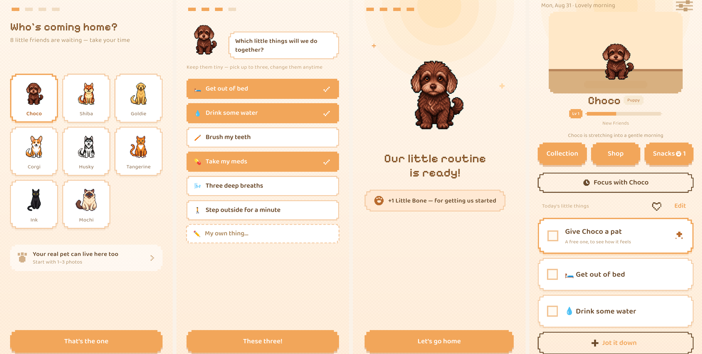
At mid-term, a rework of the notification layer sat implemented but deliberately unmerged, because the literature contradicted two of its three mechanisms. That conflict has since been resolved — not by code, but by a written decision now recorded in the project's constitution: the pet's wellbeing is never a function of user presence. The pet lives its own good day; it may still speak, but only ever about itself — presence without a request. On those semantics the rework shipped. The entire message pool now has the pet reporting its own day (a sunbeam, a bird at the window, a big stretch); phrasings like "waiting for you", "miss you" and "don't forget" are banned on both sides of the screen, enforced by a lint that fails the build; timing keeps a ±10-minute jitter; and consecutive unopened days back the frequency off — daily, then every other day, then weekly — resetting the moment the app is opened. The literature's sharpest objection (Section 6) was that backing off is ambiguous withdrawal, and rejection sensitivity reads ambiguity as rejection; under "own good day" semantics the ambiguity is gone — a pet that never waits cannot be read as giving up on you, its news just arrives less often. Two in-app lines that broke the rule ("Just because I miss you") were rewritten in the same change.
The most recent wave turns the pet from an actor on a stage into something closer to a housemate, and each piece is the evidence base applied. The home screen's pet stage became a furnished room: the six decorations the milestone unlocks already awarded — previously emoji placeholders — were redesigned as pixel furniture, with existing users' unlock records mapped onto the new pieces in place, and six further pieces are bought with treats in a shop with a fixed catalogue: no timers, no refreshing shelves, no discounts, and a visitor with zero treats can browse without a single prompt to earn more. Furniture is scaled per slot against the pet, which sits inside the scene rather than floating over it.
A dress-up system — six accessories anchored to the rig's head and neck bones — was implemented to completion and then deliberately not shipped. Section 1.3.2 documents cosmetic rewards as the pet mechanism's known ceiling, and a wardrobe is the cosmetics shop wearing a different hat; the branch is kept, unmerged, as a record of the decision. Its place was taken by feeding. A bond axis now runs alongside the growth stages: feeding the pet converts treats into bond XP through a seven-item food catalogue where XP equals price, with the first three feeds of a day at full value and later ones silently diminishing — no counter shows how many remain. Any day the app is first opened adds a fixed amount, never displayed as a run of days; a furnished room adds a small, capped passive bonus. Levels bring a title and a celebration and unlock nothing. One constitutional amendment was written for this: a persistent progress bar is allowed on the bond axis only — the task side of the product remains progress-bar-free, because there a progress indicator is a deficit indicator. On upgrade, an existing user's stored growth stage converts to an initial bond value, so an old install's first screen shows an established relationship, not a reset one.
Focus sessions operationalise the body-doubling observation that Section 1.3.3 found untested, in the product's own grammar: a single 5–45-minute foreground session with the pet present on the timer screen, settling one treat per full quarter-hour on completion. Leaving the app pauses the clock automatically; ending early produces a warm goodbye, no reward and no trace — abandoned sessions never enter history, because a record of quitting is a failure state by another name. Completed sessions do: "you and Choco focused together for 30 minutes".
Finally, one-off tasks can carry a once-only invitation: a date and time at which the pet asks exactly once. A missed moment is silent — nothing repeats, nothing accumulates. Scheduled items appear in a "Coming up" group under the day's list, and when the moment passes the label simply disappears, leaving an ordinary task with no overdue trace. This is deliberate offloading rather than a bet on the impaired channel of Section 1.1: the user commits the intention once, at capture time, and the device holds it thereafter. Old daily-style reminders on existing one-off tasks keep working unchanged until the user next edits them — data care the tests enforce.
All screenshots below are from the current build on an Android emulator, in a state prepared for photography: the preset pet Choco adopted through onboarding, three weeks of task history, furniture from both routes, and a bond level built by feeding — the state a few weeks of ownership produces. They are ordered as a user would meet them (Figures 8–21).
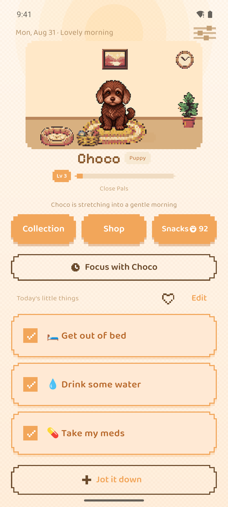
The top half of Home is now the pet's room (Section 3.8): Choco sits on its rug among furniture earned at milestones and bought in the shop, and beneath the name sit the bond level and its title — the one persistent progress bar the constitution allows. Three buttons name everywhere treats can go — Collection, Shop and Snacks, with the paw-print balance — and the focus entry sits above the list. The list itself keeps its rules: completed dailies rest in place in a warm tint, and there is still no due date, no age, no overdue marker and no count of what remains (Figure 8).
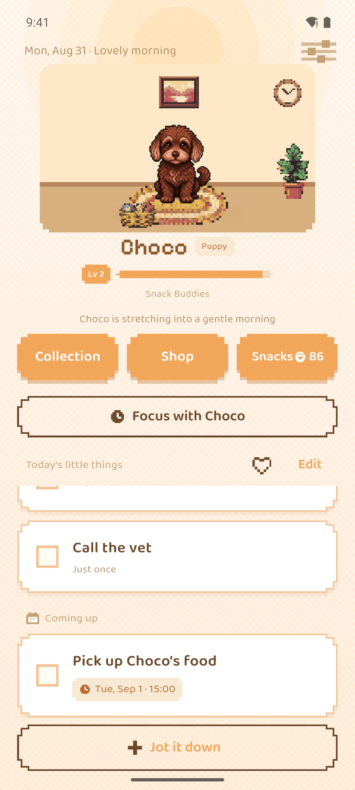
A one-off with a scheduled invitation waits in its own group below the day's list, wearing its date and time. When the moment passes, the label simply disappears and the task returns to the plain list — no overdue trace exists to render (Section 3.8) (Figure 9).
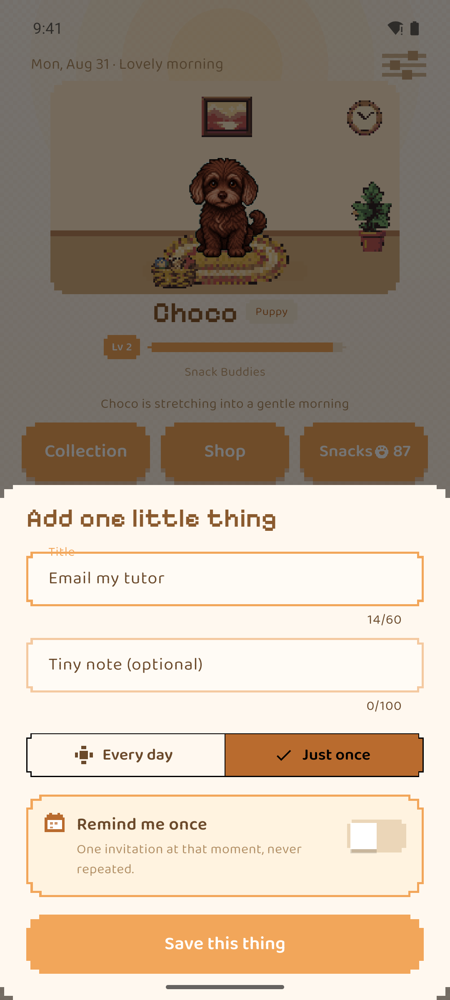
Capture is one bottom sheet: an autofocused title, an optional tiny note, and the kind stated in words — "Every day" against "Just once", defaulting to just once, because demanding a recurrence decision at capture time is exactly the friction that loses the thought. The reminder section is off by default and phrased as a promise: "One invitation at that moment, never repeated." (Figure 10)
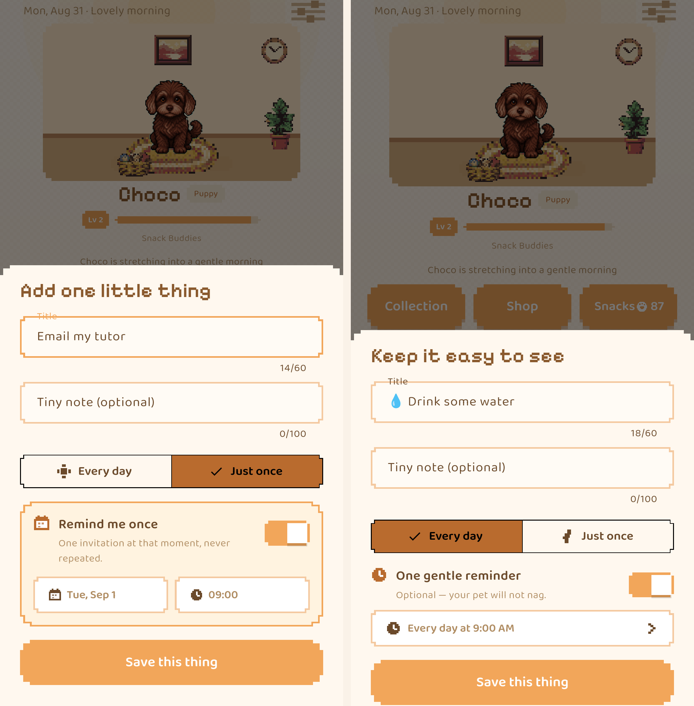
The editor changes shape with the kind (Section 3.8). A one-off offers "Remind me once" with a date and a time; a daily offers "One gentle reminder" at a time of day, subtitled "Optional — your pet will not nag." They are deliberately two different objects, not one control with a checkbox (Figure 11).
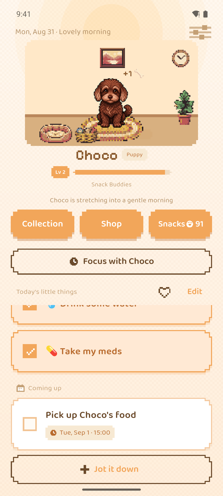
Completion produces warmth and nothing else: the card fills, the pet celebrates, and a treat drops with a small "+1" beside the pet. A completed daily stays visible in its warm tint; a completed one-off simply leaves the list — done is gone, not archived. There is no score, no streak and no progress count anywhere on the task side (Figure 12).
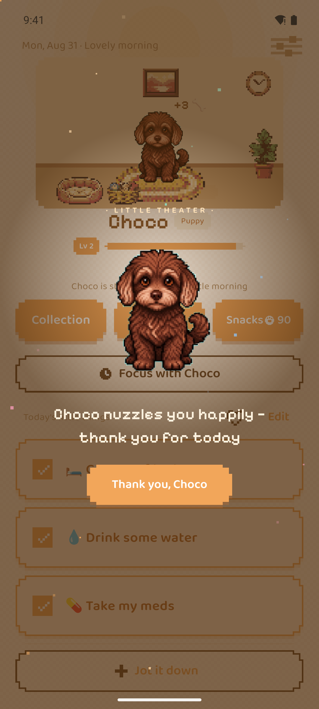
Finishing the day's list triggers the one moment the application makes a fuss: the pet fills the screen, particles rise, three bonus treats drop, and the message reads "Choco nuzzles you happily — thank you for today", dismissed by "Thank you, Choco" — the exchange stays between user and animal. In the same run, the thirtieth lifetime completion quietly placed a pet bed in the room: the milestone route to furniture has no banner of its own. By construction there is no equivalent screen for failure (Figure 13).
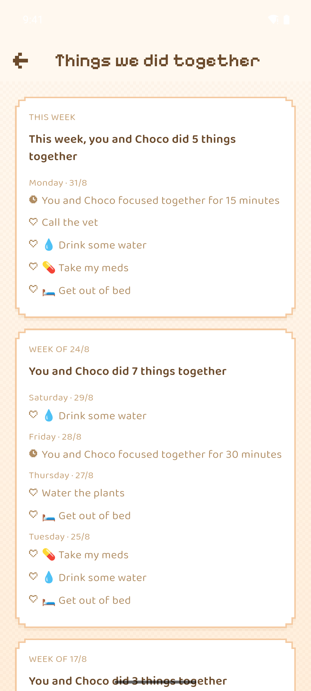
The history screen reads "This week, you and Choco did 5 things together" and lists only days that have items — completions, and now focus sessions in their own words ("You and Choco focused together for 15 minutes"). Days without completions are not shown as empty or zero: they do not exist in the data model at all, so no view can accidentally surface them, and no week is compared with another (Figure 14).
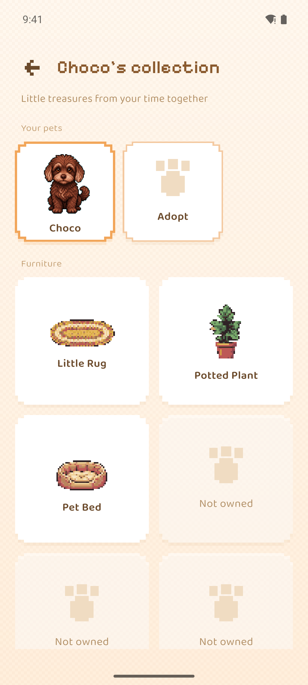
The pet shelf lists every pet the user has beside an explicit "Adopt" slot — the registry of Section 3.2 made visible. Below it, furniture shows as illustrations once owned; unowned pieces show a paw silhouette and "Not owned", with no threshold and no "2 more to go" (Figure 15).
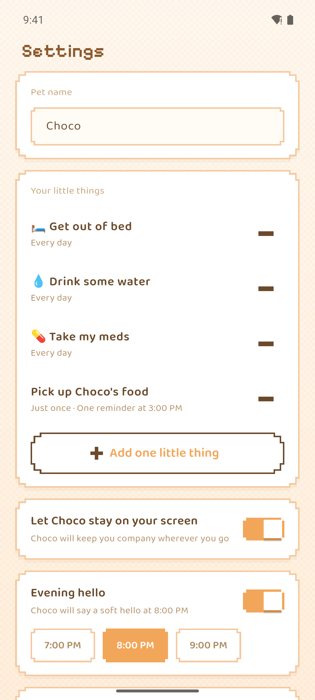
Settings stays short. Tasks are listed with their kind in words — "Every day", or "Just once · One reminder at 3:00 PM", the stored invitation of Section 3.8 on display — and are removed with a single control; nothing archives. The overlay is one row ("Let Choco stay on your screen"), and the evening check-in is one toggle and three fixed times, phrased as something the pet does (Figure 16).
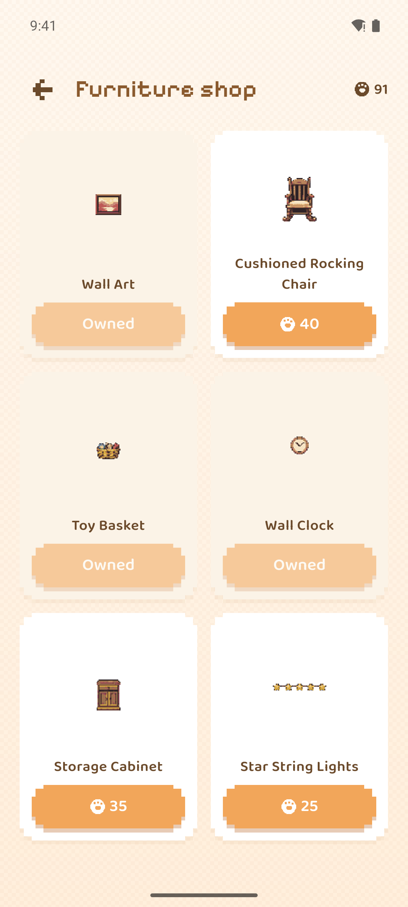
The shop is a fixed catalogue with prices in paw-cookies and owned pieces greyed to "Owned". Nothing refreshes, expires or discounts, and a visitor with no treats can browse without a single prompt to go and earn some (Figure 17).
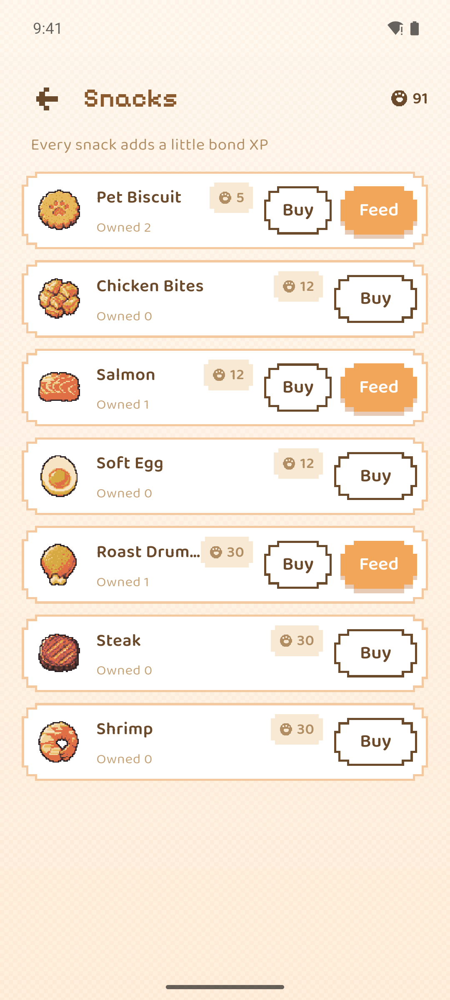
The seven-item food list shows price, owned count, and a Feed button where stock exists; the header line — "Every snack adds a little bond XP" — is the entire pitch. No item is limited, and nothing here ever asks to be bought (Figure 18).
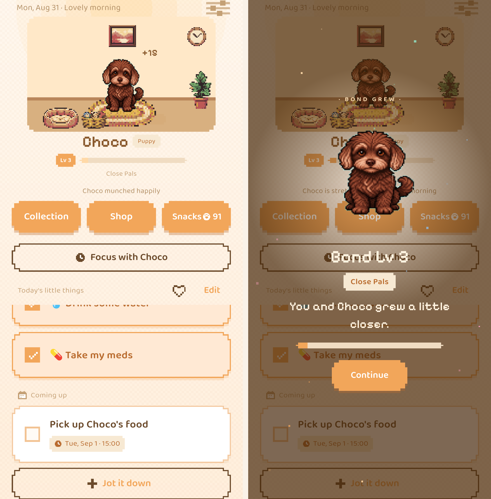
Feeding spends a stocked snack, the XP rises over the pet ("+12", "Choco munched happily"), and when a threshold crosses, the bond axis holds its one celebration: "Bond Lv 3 · Close Pals · You and Choco grew a little closer." It unlocks nothing; the reward is the sentence (Figure 19).
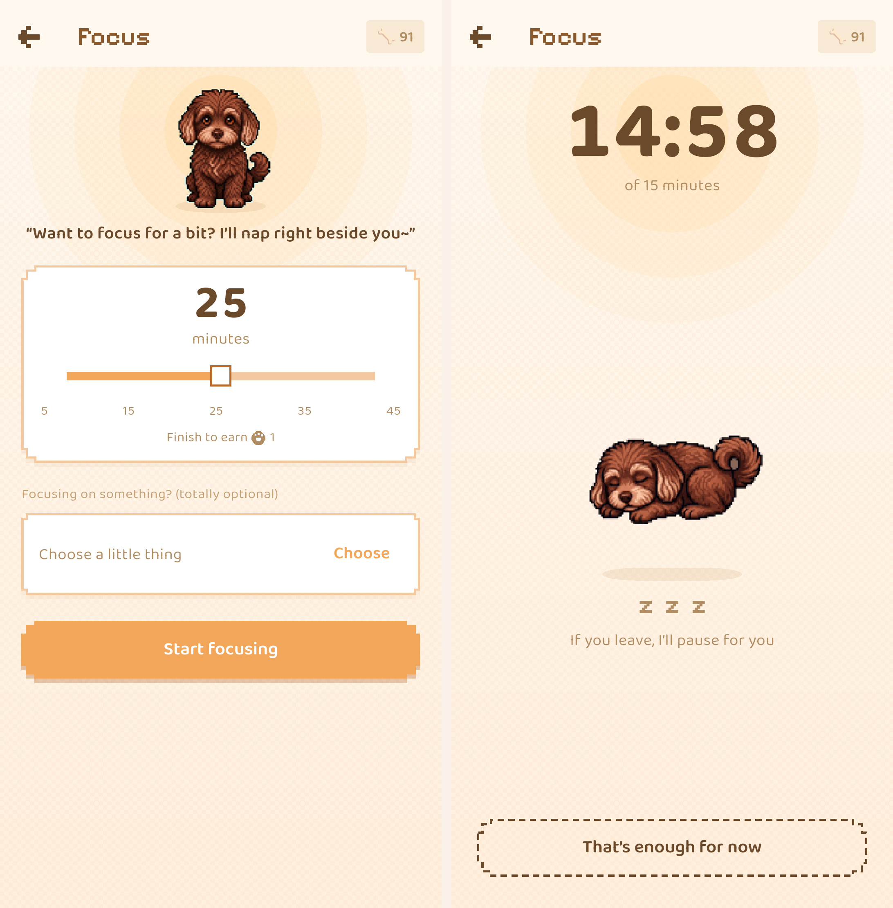
The focus screen asks "Want to focus for a bit? I'll nap right beside you~" over a 5–45-minute slider that forecasts the drop ("Finish to earn 1"), with task binding optional. While running, the screen is a countdown and a sleeping pet; leaving the app pauses the clock automatically ("If you leave, I'll pause for you"), and the exit is a dashed "That's enough for now" that ends the session without reward and without trace (Figure 20).
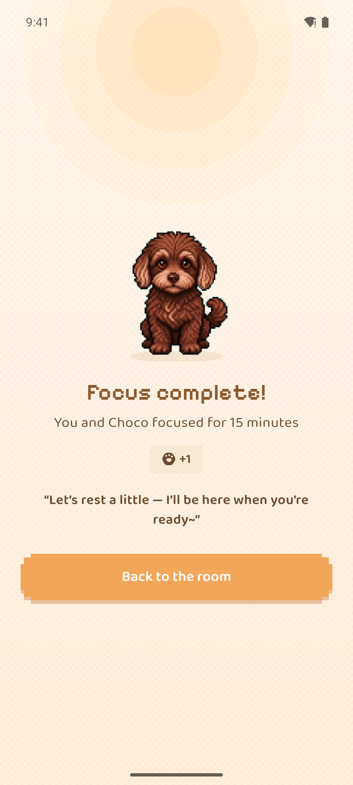
A completed session settles plainly: "You and Choco focused for 15 minutes", one treat per full quarter-hour, and an invitation to rest — "Let's rest a little — I'll be here when you're ready~". The session then appears in history (Figure 14); an abandoned one would appear nowhere (Figure 21).
The acceptance walkthrough below exercised the first-generation flow, which worked by exporting a request and importing the resulting pack by hand — the current pipeline (Section 3.5) needs neither step, but the walkthrough is kept because it is what was actually verified end to end on a device. It ran from a clean install: onboarding → hatchery → photograph → export of a 139 KB request archive → import through the real iOS document picker → both pets listed with the new one selected → switching between them → completing onboarding → Home showing the imported pet with its hatch ceremony — ending with zero leftover archives in documents. Two further screenshots taken during that run record the ceremony and the resulting Home screen.
Three findings from the build are results in their own right. A custom file extension cannot be picked in the iOS document picker unless the app declares it — the picker produces a dynamic UTI and Files greys the file out — fixed by declaring UTExportedTypeDeclarations. Re-importing a pack for the currently selected pet paints a disposed image during the asynchronous gap, unless the replacement atlas is loaded before the old one is disposed. And exported request archives accumulated indefinitely because cancellation deleted the request folder but not the archive next to it — found by inspecting the simulator's container, where the previous day's 139 KB archive was still sitting.
The fourth result began as a negative one and is reported as such. To test whether a pixel-art style would improve frame-to-frame consistency, I first generated a pixel version through the sprite pipeline's own pixel preset. The output was not pixel art: 13,713 unique colours, against fewer than 32 for the real thing. Mechanical post-processing — downsampling plus palette quantisation — did produce true 23-colour pixel art but destroyed recognisability, because the eyes and muzzle are defined by exactly the detail that downsampling removes first. What worked was constraining the generation itself: a 64×64 logical grid, blocks aligned to it, a 24-colour palette, no anti-aliasing. That produced genuine pixel art that kept the identity anchors — the silver-brown muzzle, the brow spots, the floppy-ear silhouette. A six-frame idle strip built from that reference measured 14% inter-frame drift after quantisation, against 42% for the then-current style, with frame area stable to within 0.2 percentage points: the silhouette stops breathing in and out between frames. The improvement was real but partial — 14% is still far above a hand-animated loop — which is why the style decision and the pipeline decision were made together: pixel art made the frames consistent (Section 3.3), and the rig made the motion deterministic (Section 3.5). The aesthetic choice also answers the "infantile" objection documented against the category leader in Section 1.3.2.
With every wave described in Section 3 merged, flutter test passes 194 tests across 45 files. The generation pipeline carries its own suite of 28 tests across 6 files, and the hatch backend another 25 across 4 — 247 in total, and every one of these figures comes from running the suites, not quoting them. The suite includes the lint that fails the build if notification copy ever regains a forbidden phrasing (Section 3.7). Coverage concentrates on the promises the product makes its users: migration of stored data across format changes, including the conversion of stored growth stages into initial bond values (Section 3.8); day rollover, including that rolling over multiple missed days leaves no historical markers; one-off isolation from daily rollover; treat and unlock edges; bond XP accrual and its silent daily diminishing; focus-session settlement, including that abandoned sessions leave no event; reminder serialisation across the old daily form and the new once-only form; the sorted, capped notification window with one fire per task per day and no re-asking after permission denial; local-week positive-history aggregation; JSONL round-trips; sprite atlas frame mathematics; pack install and validation; accessibility semantics boundaries; and copy scans along the feeding and reminder paths. The intent is that the red lines are enforced by tests, not by discipline.
Gaps before submission: no end-to-end automated UI test; the Android overlay and the rebuilt onboarding need device-level walkthroughs on more than my own handset; and Android notification timing needs device-level verification, because the review corpus shows scheduled notifications failing or arriving in batches under OEM battery policies as a category-wide defect (111 of 1,537 Habitica Play reviews, 63 of them one or two stars).
The evaluation stands on four things, stated plainly. The software testing of Section 5.1. The four-body evidence audit of Section 2.2, which functions as an evaluation of the design's premises and has already changed the design — it is why the notification rework is held back (Section 3.7) and why three claims were withdrawn (Section 1.3.3). Structured self-use: I am in the target population, my daily use runs against the logged event data, and it has already produced real findings (the idle-animation measurement of Section 3.2). And informal use beyond the author, which so far means one friend — reported as exactly that, not inflated into a study. What none of these can do is test the anchor mechanism on users who are not the author. That is the project's main limitation, and the report states it as such; the user study designed to address it is set out below.
A user study was designed for this project; the full protocol is reproduced as Appendix A. In summary: five to ten seed participants who are ADHD-leaning pet owners, recruited through my personal network only; a fourteen-day run; a short questionnaire at days 7 and 14; user-initiated local data export as the only data channel; and qualitative red-light monitoring for guilt or uncanny reactions to the user's own animal, treated as a finding that outweighs any retention number. Covert recruitment in ADHD communities was ruled out both ethically and pragmatically — the community research documents moderators publicly naming products for stealth marketing.
That study will not run within this project's window, and the reasons are recorded honestly rather than hidden. Ethics approval is the longest-lead-time item, and the literature broke the study's own timetable. The community benchmark of ">50% retention at two weeks" conflates two incompatible frames: real-world median 15-day retention for mental-health apps is 3.9% (Baumel et al. 2019a), while recruited trials run near 75% and report usage a median 4.06× higher than real-world use of the same programs (Baumel et al. 2019b) — so a recruited seed group clearing 50% in two weeks would prove almost nothing. The review corpus also locates the real failure points at days 2–4, when setup enthusiasm fades, and around the second month, when novelty does — so a credible run needs a day-60 check. And unblinded self-report is the most inflation-prone outcome in this field — behavioural-intervention effects in children collapsed to non-significance under probably-blinded assessment (Sonuga-Barke et al. 2013). A study worth running does not fit between now and submission, and a study squeezed to fit would produce numbers that could not support any claim.
The application now does what it was specified to do, and the research conducted for this report says the specification was partly wrong. That is the honest summary, and the remaining work follows from it rather than from the original plan. Against the objectives of Section 1.2: the offline, account-free core loop (i) and the pet with the own-pet route (ii) are built and shipped in full; the safety red lines (iii) are enforced by the structure of the code and its tests (Section 5.1); and the evaluation objective (iv) was met in an unexpected form — the retention criterion was examined as promised, found unable to support claims, and the study built on it deferred rather than run badly (Section 5.2). The attachment hypothesis inside (ii) remains untested on anyone but the author.
The notification conflict, for the record. The evidence that held the rework back is worth keeping in view even now that Section 3.7 has shipped it: the closest test found a purpose-built 30-message bank no better than a single fixed string (Bell et al. 2023); jitter is opposed by cue-consistency accounts of habit formation (Lally et al. 2010); one trial found less frequent notification produced less viewing and actioning (Morrison et al. 2017); and withdrawing contact is ambiguous by construction, which rejection sensitivity reads as rejection (Downey & Feldman 1996). The constitutional resolution — the pet only ever speaks about its own day — is an argument that the ambiguity, not the back-off, was the hazard. That is a design judgement, not a finding; whether it holds is exactly what the post-submission study must watch for.
Move from time-based to event-based cues. The clearest evidence-led change still unbuilt: anchoring a task to "after dinner" rather than to 19:00 uses the prospective-memory channel that is spared in ADHD adults rather than the one that is impaired, and matches the cue type the forwarded expert feedback independently proposed. The evening check-in's move out of onboarding and into context (Section 3.6) is a first step in this direction.
Build the return screen and an explicit pause. Zero punishment does not stop an accumulated backlog from speaking — the shame reminder. The semantics are now settled in the constitution (Section 3.7): after an absence the pet has been living its own good day, so the return screen shows the pet's accumulated news rather than the user's arrears. Building that screen, and a deliberate pause action that reframes absence as chosen rather than failed, is the next piece of guilt engineering.
Promote export to a user-facing backup. The application is local-only, the pet is generated from the user's own animal and is therefore irreplaceable, and data loss is the top-voted complaint against the category leader — which at least has accounts to restore from. The export mechanism exists; making it a visible backup with an honest explanation is a small change against a disproportionate risk.
Finish the new-pipeline rollout. The pipeline, proxy, renderer, preset roster and hatch flow all exist (Section 3.5), the eight preset packs ship with the app, and the adopted pet now rides the Android overlay (Section 3.4). What remains is operational: deploy the hatch proxy beyond the local demonstration environment, and build the iOS widget as the second ambient surface — which can reuse the pixel asset form the overlay draws. Pricing and a real in-app purchase belong to a commercial phase that is frozen, and therefore sit outside the scope of this project.
Evaluation, after submission. The designed study — ethics enquiry, recruitment, the fourteen-day run with a day-60 follow-up — remains the right test and stays on the plan, beyond the project window (Section 5.2). Within the window, the project's claims rest on the build, its tests, and the evidence audit; the central mechanism is therefore, on present evidence, unproven on anyone but the author — and the report says so plainly rather than claiming otherwise.
Altgassen, M., Kretschmer, A. & Kliegel, M. (2014) 'Task dissociation in prospective memory performance in individuals with ADHD', Journal of Attention Disorders, 18, pp. 617–624. doi:10.1177/1087054712445484.
Arnsten, A.F.T. (2015) 'Stress weakens prefrontal networks: molecular insults to higher cognition', Nature Neuroscience, 18, pp. 1376–1385. doi:10.1038/nn.4087.
Barkley, R.A. & Murphy, K.R. (2010) 'Impairment in occupational functioning and adult ADHD: the predictive utility of executive function (EF) ratings versus EF tests', Archives of Clinical Neuropsychology, 25, pp. 157–173. doi:10.1093/arclin/acq014.
Baumel, A., Muench, F., Edan, S. & Kane, J.M. (2019a) 'Objective user engagement with mental health apps: systematic search and panel-based usage analysis', Journal of Medical Internet Research, 21, e14567. doi:10.2196/14567.
Baumel, A., Edan, S. & Kane, J.M. (2019b) 'Is there a trial bias impacting user engagement with unguided e-mental health interventions? A systematic comparison of published reports and real-world usage of the same programs', Translational Behavioral Medicine. doi:10.1093/tbm/ibz147.
Bell, L., Garnett, C., Bao, Y., Cheng, Z., Qian, T., Perski, O., Potts, H.W.W. & Williamson, E. (2023) 'How notifications affect engagement with a behavior change app: results from a micro-randomized trial', JMIR mHealth and uHealth, 11, e38342. doi:10.2196/38342.
Bond, C.F. & Titus, L.J. (1983) 'Social facilitation: a meta-analysis of 241 studies', Psychological Bulletin, 94, pp. 265–292. doi:10.1037/0033-2909.94.2.265.
Byrne, S., Gay, G., Pollack, J.P., Gonzales, A., Retelny, D., Lee, T. & Wansink, B. (2012) 'Caring for mobile phone-based virtual pets can influence youth eating behaviors', Journal of Children and Media, 6, pp. 83–99. doi:10.1080/17482798.2011.633410.
Chandler, J. & Schwarz, N. (2010) 'Use does not wear ragged the fabric of friendship: thinking of objects as alive makes people less willing to replace them', Journal of Consumer Psychology, 20, pp. 138–145. doi:10.1016/j.jcps.2009.12.008.
Coghill, D.R., Seth, S. & Matthews, K. (2014) 'A comprehensive assessment of memory, delay aversion, timing, inhibition, decision making and variability in attention deficit hyperactivity disorder: advancing beyond the three-pathway models', Psychological Medicine, 44, pp. 1989–2001. doi:10.1017/s0033291713002547.
Cowan, N. (2001) 'The magical number 4 in short-term memory: a reconsideration of mental storage capacity', Behavioral and Brain Sciences, 24, pp. 87–114. doi:10.1017/s0140525x01003922.
Downey, G. & Feldman, S.I. (1996) 'Implications of rejection sensitivity for intimate relationships', Journal of Personality and Social Psychology, 70, pp. 1327–1343. doi:10.1037/0022-3514.70.6.1327.
Epstein, D.A., Caraway, M., Johnston, C., Ping, A., Fogarty, J. & Munson, S.A. (2016) 'Beyond abandonment to next steps: understanding the lived experience of abandoning personal informatics tools', in Proceedings of the 2016 CHI Conference on Human Factors in Computing Systems, pp. 1109–1113. doi:10.1145/2858036.2858045.
Faraone, S.V., Banaschewski, T., Coghill, D., Zheng, Y., Biederman, J., Bellgrove, M.A. et al. (2021) 'The World Federation of ADHD International Consensus Statement: 208 evidence-based conclusions about the disorder', Neuroscience & Biobehavioral Reviews, 128, pp. 789–818. doi:10.1016/j.neubiorev.2021.01.022.
Gawrilow, C. & Gollwitzer, P.M. (2008) 'Implementation intentions facilitate response inhibition in children with ADHD', Cognitive Therapy and Research, 32, pp. 261–280. doi:10.1007/s10608-007-9150-1.
Gollwitzer, P.M. & Sheeran, P. (2006) 'Implementation intentions and goal achievement: a meta-analysis of effects and processes', Advances in Experimental Social Psychology, 38, pp. 69–119. doi:10.1016/s0065-2601(06)38002-1.
Google (2026a) Flutter (version 3.44) [software]. Available at: https://flutter.dev (accessed 30 August 2026).
Google (2026b) Dart programming language [software]. Available at: https://dart.dev (accessed 30 August 2026).
Hipp, D.R. (2026) SQLite [software]. Available at: https://www.sqlite.org (accessed 30 August 2026).
JetBrains (2026) Kotlin programming language [software]. Available at: https://kotlinlang.org (accessed 30 August 2026).
Kohls, G., Herpertz-Dahlmann, B. & Konrad, K. (2009) 'Hyperresponsiveness to social rewards in children and adolescents with attention-deficit/hyperactivity disorder (ADHD)', Behavioral and Brain Functions, 5, 20. doi:10.1186/1744-9081-5-20.
Laestadius, L., Bishop, A., Gonzalez, M., Illenčík, D. & Campos-Castillo, C. (2024) 'Too human and not human enough: a grounded theory analysis of mental health harms from emotional dependence on the social chatbot Replika', New Media & Society, 26, pp. 5923–5941. doi:10.1177/14614448221142007.
Lally, P., van Jaarsveld, C.H.M., Potts, H.W.W. & Wardle, J. (2010) 'How are habits formed: modelling habit formation in the real world', European Journal of Social Psychology, 40, pp. 998–1009. doi:10.1002/ejsp.674.
Morrison, L.G., Hargood, C., Pejovic, V., Geraghty, A.W.A., Lloyd, S., Goodman, N. et al. (2017) 'The effect of timing and frequency of push notifications on usage of a smartphone-based stress management intervention: an exploratory trial', PLOS ONE, 12, e0169162. doi:10.1371/journal.pone.0169162.
OpenJS Foundation (2026) Node.js [software]. Available at: https://nodejs.org (accessed 30 August 2026).
Python Software Foundation (2026) Python [software]. Available at: https://www.python.org (accessed 30 August 2026).
Schuenke, R., Dickenson, S. & Moore, M. (2025) 'Reading between the lines: exploring body doubling in ADHD using EEG', in Proceedings of the 27th International ACM SIGACCESS Conference on Computers and Accessibility, pp. 1–6. doi:10.1145/3663547.3759743.
Sonuga-Barke, E.J.S., Brandeis, D., Cortese, S., Daley, D., Ferrin, M., Holtmann, M. et al. (2013) 'Nonpharmacological interventions for ADHD: systematic review and meta-analyses of randomized controlled trials of dietary and psychological treatments', American Journal of Psychiatry, 170, pp. 275–289. doi:10.1176/appi.ajp.2012.12070991.
Toplak, M.E., West, R.F. & Stanovich, K.E. (2013) 'Practitioner review: do performance-based measures and ratings of executive function assess the same construct?', Journal of Child Psychology and Psychiatry, 54, pp. 131–143. doi:10.1111/jcpp.12001.
Drafted 13 August 2026 as the protocol for the study summarised in Section 5.2. The study did not run within the project window, for the reasons given there; the protocol is reproduced as designed. Appendices are not included in the word count.
Ethics clearance is the longest-lead-time item in the study: recruitment cannot begin until it is resolved, and the fourteen-day window plus analysis has to fit before the report deadline. The questions to put to the supervisor and, if directed, the department's ethics contact:
If approval is needed and slow, the fallback is a structured self-evaluation with fewer participants under whatever the school permits, reporting the constraint honestly rather than quietly proceeding. No one is recruited before these answers are in hand.
The primary question is retention: does an external-anchor mechanism keep ADHD-leaning users returning where reminder-based tools do not? The secondary question matters more for the design — whether the central premise survives contact with real users, namely that a pet built from the user's own animal deepens attachment without importing guilt. That premise has a documented failure mode: users of comparable applications report being unable to open the app because they cannot face the character. If participants report guilt, dread, or an uncanny reaction to their own animal rendered, the premise is falsified, and that finding outweighs any retention number.
Five to ten seed participants: adults who self-report ADHD or ADHD-like executive-function difficulty and who own a pet, since the hatch loop requires a photograph of a real animal. Self-report is sufficient; no diagnosis is requested, recorded, or verified.
Recruitment is through the researcher's personal network only — friends, family, and people who volunteer after hearing about the project directly. There will be no posting in ADHD communities, covert or otherwise. The community research of Section 2.2 documents r/adhdwomen moderators publicly naming six products for stealth marketing, with the top comment (1,139 upvotes) demanding the full list and another (518 upvotes) calling the practice preying on disabled people; affiliate links are banned outright. Recruitment that looked like a product doing community research would be identified as such — an ethical failure and reputationally terminal. If more participants are needed later, the route is open, identified recruitment with moderator permission, or nothing.
Fourteen days of ordinary use, starting once onboarding is complete and the participant's own pet has been generated and imported. No usage is prescribed; stopping is a valid and informative result, and participants are told explicitly that abandoning the app is a normal outcome the researcher wants to hear about rather than be spared.
Primary metric — 14-day retention, bar >50%, where a participant counts as retained if the app was opened on at least one of days 12–14. The bar is the standard the target community itself set out, on the reasoning that early reviews are worthless because ADHD reviewers are novelty-seeking by disposition and only two-week retention convinces. Adopting the population's own criterion rather than a flattering invented one is deliberate. (Section 5.2 records why, on the literature, this bar cannot support a claim in a recruited seed group; the protocol is reproduced as originally drafted.)
Secondary measures, all from the local event log: completions per active day, daily-to-one-off ratio, interval distribution between opens, and whether opens cluster around notification times or occur independently — the last being the closest available proxy for the anchor mechanism working as designed.
Red-light qualitative monitoring. Throughout, the researcher watches for the premise-2 red light: guilt toward the pet, dread of opening the app, avoidance framed in terms of the animal, or an uncanny or distressing reaction to seeing their own pet rendered — particularly acute if the real animal is elderly or has since died, which must be considered before inviting any given participant. A single credible red-light report is a serious finding written up as such, not averaged away against retention figures.
A short weekly questionnaire at day 7 and day 14, deliberately brief because the same research shows length itself drives attrition in this population. Six items: when the app was last opened and what prompted it; whether any notification was noticed and how it read; one free-text item on how the pet feels to have around, worded neutrally enough to catch warmth and guilt without leading toward either; whether anything was recorded as done that was not done, asked without judgement because falsification is expected behaviour rather than a participant failing; whether anything was irritating or embarrassing; and whether they expect to keep using it.
Local data export. The app writes a newline-delimited JSON event log and exports it through the system share sheet. There is no server and no analytics service, so the export is the only data channel and is entirely user-initiated. Exports are requested at day 14 only.
Exit conversation, 15–20 minutes, optional, semi-structured on the same themes.
Participants receive a plain-language information sheet and give written consent before installation, using the department's template if one exists (A.1, question 4). It states: what the app does; that all data stays on their own device and nothing is transmitted automatically; that the researcher receives only what they choose to export and send; that photographs of their pet generate the sprite and are not published; that they may stop at any time without giving a reason; and how to withdraw data after sending it. Exported logs are pseudonymised on receipt (participant code, not name) and contain task titles that participants are warned may be personal, with an explicit instruction that they may delete any line before sending. Nothing is published that could identify a participant or their animal.
With n between five and ten, no inferential statistics are appropriate; retention is reported as a raw count with each trajectory described individually. This is the correct treatment on the evidence, not a concession to sample size: practitioner estimates put the transfer rate of any single-mechanism ADHD intervention at 5–10%, because ADHD is a symptomatic rather than aetiological diagnosis with highly dispersed underlying causes — hence the field's own maxim that having met one person with ADHD means having met one person with ADHD. Divergent outcomes are therefore the expected result, not noise, and uniform success across ten participants should be regarded as suspect.
The analysis must therefore separate three readings, and the instruments above are chosen to make that separation possible:
| Reading | What it looks like in the data |
|---|---|
| The mechanism is ineffective | Participant engages with the pet, reports liking it, and still does not act — opens are decorative, completions do not rise, "I looked at it and did nothing" |
| Wrong subtype for this mechanism | Participant never forms the attachment at all, is indifferent to the pet, and the app is simply a plain to-do list to them — a different intervention is indicated, not a redesign of this one |
| Premise failure (red light) | Attachment forms and turns into debt — guilt, avoidance, dread of opening; this invalidates the design rather than the fit |
Conclusions will be written as design implications for a named subtype, not as generalisations about ADHD.